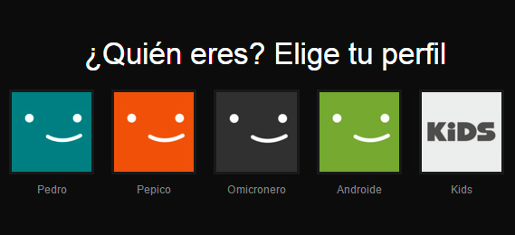
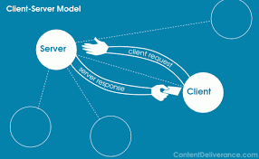

Python 101
Clase 3 - Flask
Flask

¿Qué es Flask?
Flask es un microframework de desarrollo de aplicaciones web en Python.
Flask no viene con Python
Tenemos que instalarlo
¿Cómo instalamos más cosas en Python?
Cuando queremos instalar paquetes de terceros usamos PIP.
Verificando instalación de PIP
$ pip --version
pip 9.0.1 from /usr/lib/python2.7/site-packages (python 2.7)
$ pip3 --version
pip 9.0.1 from /usr/lib/python2.7/site-packages (python 2.7)
Comandos de PIP
pip --helppip install <nombre_paquete>pip uninstall <nombre_paquete>pip freeze > <nombre_archivo>
Virtualenvs
Los entornos virtuales son instalaciones "nuevas" de python que se pueden ejecutar localmente sin afectar al binario principal
Perfiles
Complicado

Pipenv
Pipenv es una herramienta que maneja la instalación de paquetes y la creación de entornos virtuales automágicamente
Instalando pipenv
$ pip install pipenv --user
Comandos de pipenv
pipenv --helppipenv install
Instalando Flask con Pipenv
$ mkdir hola_mundo
$ cd hola_mundo
$ pipenv install Flask

Arquitectura Web
- Cliente - Servidor
- Request - Reply
- IP
- Puerto
- dominio
Cliente / Servidor
Dominios

Dirección de red
- IPv4: ###.###.###.###
- 0 < ### > 255
- 192.168.x.x
- 127.x.x.x ==
localhost - Fija / Dinámica
- Pública / Privada
Repaso
- Dirección de red
- Protocolos
- Puertos
- Dominios
- Petición
- Respuesta
Hola Flask!
from flask import Flask
app = Flask(__name__)
@app.route('/')
def index():
return "Hola Flask!"
if __name__ == "__main__":
app.run(debug=True)
Ejecutando
$ pipenv run python app.py
* Running on http://127.0.0.1:5000/ (Press CTRL+C to quit)
* Restarting with stat
* Debugger is active!
* Debugger PIN: 241-063-797
Funciona!

YES!